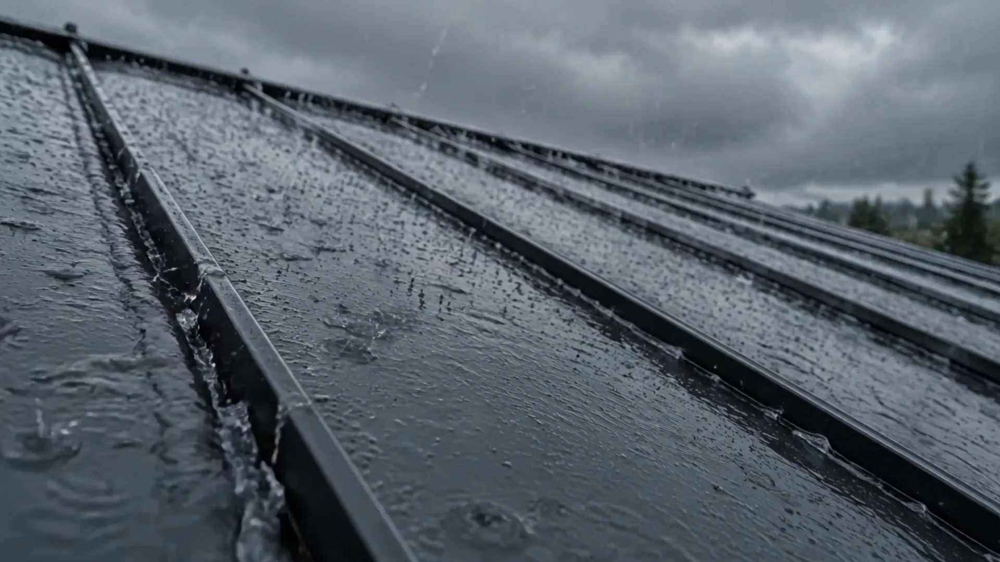
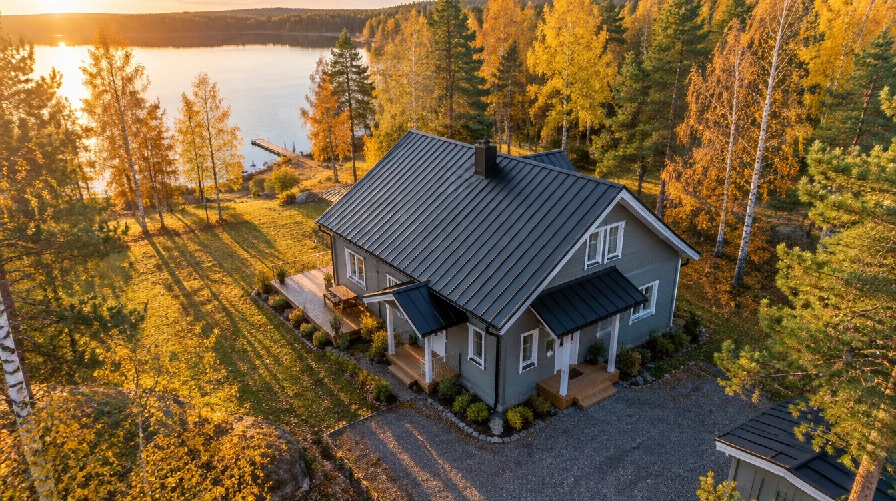
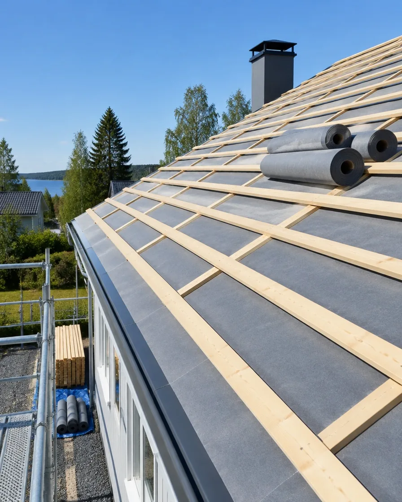
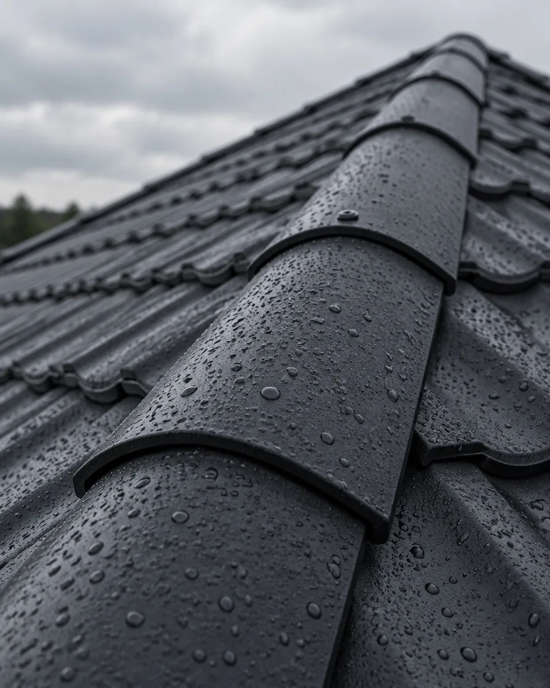
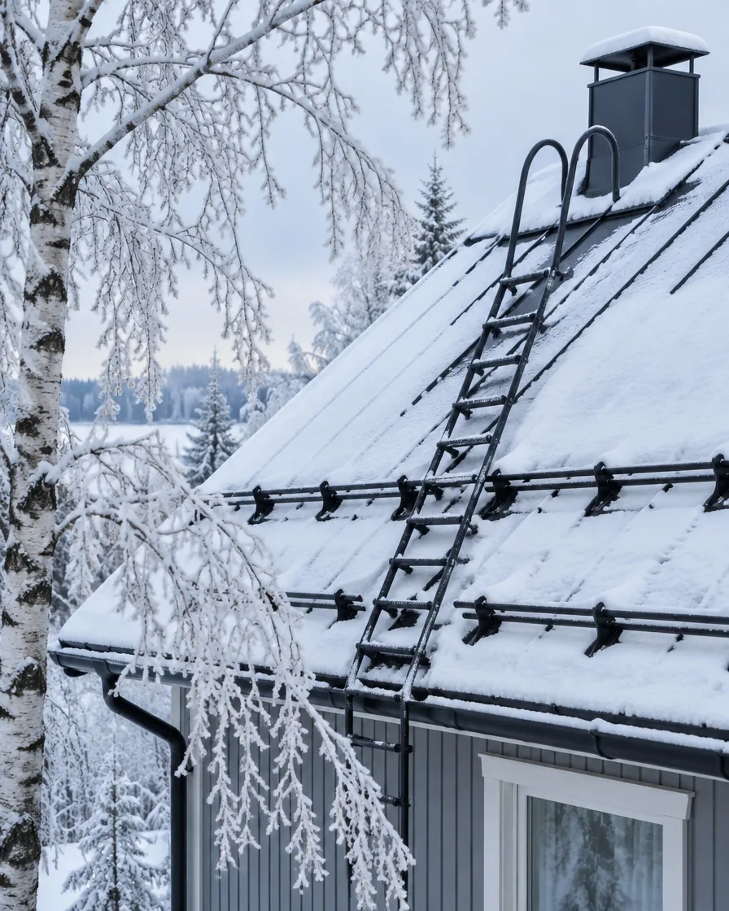

Kattoremontit Uudellamaalla
Katto kuntoon ennen seuraavaa syyssadetta.
Peltikatot, kermikatot ja tiilikatot purusta viimeiseen räystäspeltiin. Kirjallinen tarjous ennen töiden alkua.
01 / Palvelut
Koko katto yhdeltä tekijältä.
Purku, aluskate, ruoteet, uusi kate, läpiviennit, kourut ja turvatuotteet. Sama porukka aloittaa ja lopettaa työn.
-
01
Peltikatot
Konesaumapelti ja tiilikuviopelti uudisrakennuksiin ja vanhan katteen tilalle.
-
02
Kattoremontit
Vanhan katteen purku, uusi aluskate ja tuuletusrakenne sekä uusi katemateriaali.
-
03
Tiili- ja kermikatot
Betonitiilikatot ja bitumikermikatot, myös loivat katot ja autotallit.
-
04
Sadevesijärjestelmät
Räystäskourut, syöksytorvet ja niiden liitokset, jotta vesi ohjautuu pois talon vierestä.
-
05
Kattoturvatuotteet
Lumiesteet, kattosillat ja tikkaat asennettuna samalla kertaa uuden katteen kanssa.
02 / 3D-kattovalitsin
Katsokaa, miltä uusi katto näyttää.
Vaihtakaa materiaalia, väriä ja sääolosuhteita. Pyörittäkää esimerkkitaloa vetämällä.

3D-malli ei käynnistynyt tällä laitteella, joten näytämme kuvan.
- Paino
- Kevyt
- Esimerkkihinta
- 75–110 €/m²
- Hyvä tietää
- Saumat ovat koholla ja kiinnikkeet jäävät piiloon. Sopii sekä loiville että jyrkille katoille.
03 / Kattolaskuri
Paljonko uusi katto maksaa?
Laskuri antaa suuntaa antavan arvion omakotitalon harjakatolle. Tarkka hinta selviää maksuttomassa kuntokartoituksessa, ja saatte sen kirjallisena ennen töiden alkua.
- Hinnat ovat esimerkkejä ja sisältävät työn ja materiaalit.
- Katon ala = pohjan ala / cos(kaltevuus) × 1,12 räystäiden vuoksi.
- Kotitalousvähennys koskee vain työn osuutta.
04 / Rakenne
Hyvä katto on viisi kerrosta, ei yksi.
- KattotuolitTarkistamme rakenteen ja korjaamme vauriot ennen uutta katetta.
- AluskateUusi aluskate pitää rakenteen kuivana, jos vettä joskus pääsee katteen alle.
- Tuuletusrimat ja ruoteetTuuletusväli kuivattaa kosteuden ja ruoteet kantavat katteen.
- KatemateriaaliPelti, kermi tai tiili, liittyminen läpivienteihin ja harjaan.
- TurvatuotteetLumiesteet, kattosilta ja tikkaat nuohoojaa ja huoltoa varten.



Sadevedet
Vesi pois katolta.
Ja pois talon vierestä.
Uusimme räystäskourut ja syöksyt samalla kertaa, jotta sadevesi ohjautuu sinne minne pitää, eikä sokkelin viereen.
05 / Esimerkkikohteita
Millaisia töitä teemme.
Alla olevat kohteet ovat kuvitteellisia esimerkkejä tätä demosivua varten, eivät oikeita asiakkaita.
- Omakotitalo · TuusulaKonesaumapelti 186 m²
Vanha tiilikate purettiin, uusi aluskate, ruoteet ja lumiesteet.
8 työpäivää - Rivitalo · KeravaBitumikermi 420 m²
Loiva katto, uudet kaivot ja räystäspellit, työ lohkoittain asukkaiden aikataulussa.
3 viikkoa - Mökki · LohjaTiilikuviopelti 74 m²
Kevyt kate vanhan huopakaton tilalle, uudet kourut ja syöksyt.
4 työpäivää - Paritalo · EspooBetonitiili 210 m²
Tiilikatto uusittiin samaa ilmettä kunnioittaen, läpiviennit ja harja tiivistettiin.
2 viikkoa
06 / Työn kulku
Selkeä alku, selkeä loppu.
- 01
Kuntokartoitus
Käymme katolla, kuvaamme ja mittaamme. Kartoitus on maksuton.
- 02
Kirjallinen tarjous
Hinta, materiaalit ja aikataulu kirjallisesti ennen kuin mitään aloitetaan.
- 03
Uusi katto
Purku, rakenne, kate ja kourut. Suojaamme pihan ja siivoamme joka päivä.
- 04
Luovutus
Käymme työn läpi yhdessä ja saatte kuvat ja tiedot käytetyistä materiaaleista.
07 / Kysyttyä
Usein kysytyt kysymykset.
Missä vaiheessa katto kannattaa uusia?
Merkkejä ovat esimerkiksi vuotojäljet ullakolla, ruostuneet tai irtoilevat pellit, haurastunut huopa ja sammaloitunut tai rapautunut tiili. Kuntokartoituksessa kerromme, riittääkö korjaus vai kannattaako koko kate uusia.
Voiko kattoremontin tehdä talvella?
Peltikaton voi asentaa myös talvella, kun rakenne suojataan hyvin. Bitumikermi vaatii lämpimämmän sään. Kerromme tarjouksessa, mikä aikataulu sopii juuri teidän kohteeseenne.
Saako kattoremontista kotitalousvähennystä?
Kyllä, työn osuudesta. Vuonna 2026 vähennys on 40 % työn osuudesta, omavastuu on 150 € ja enimmäismäärä 2 100 € henkilöä kohden vuodessa. Merkitsemme työn osuuden laskuun erikseen. Lähde: vero.fi.
Pitääkö meidän olla kotona töiden aikana?
Ei tarvitse. Sovimme aloituksesta ja pihan käytöstä etukäteen, ja kerromme päivittäin, missä vaiheessa työ on.
08 / Yhteystiedot
Pyydä maksuton kuntokartoitus.
Kertokaa talosta ja katosta lyhyesti, niin soitamme ja sovimme käynnin.
- Puhelin050 412 7780
- Sähköpostihei@raystas.fi
- ToimialueUusimaa